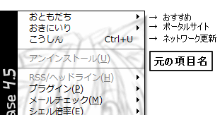
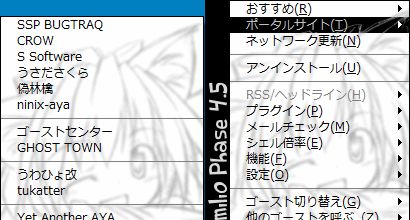
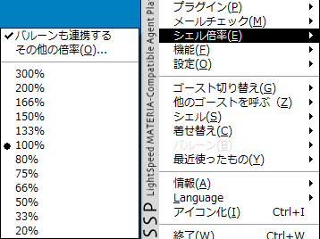

基本的な使い方：右クリックメニュー
キャラクターを右クリックする事で、右クリックメニュー（オーナードローメニュー）が開きます。
SSPの大部分の操作はこの右クリックメニューを中心に行います。
右クリックメニューは、一般にメインキャラ（Emily/Phase4.5でいうとエミリ）とサブキャラ（Emily/Phase4.5でいうとテディ、エミリオ）で表示が異なり、サブキャラのメニューは一部の項目のみの省略されたものになっています。
このページにある各項目の説明で、【サブ】とある項目が、サブキャラのメニューでも表示されます。
なおメインキャラの右クリックメニューは、タスクバーのアイコンを右クリックすることでも表示されます。
メインキャラ・サブキャラ共に画面外へ消えてしまっても、焦らずに。

ゴーストによってメニューの項目名が変わる事があります（画像はEmily/Phase4.5のメニュー表示）。
分かり難いと感じた時は、本体設定の「ゴースト(1)」からゴースト定義のメニュー表示をオフにできます。
各項目の解説
クリックでその項目の説明へ。

1,おすすめ【サブ】
ゴースト（の作者）がおすすめするサイト・ゴースト配布元などへのリンク集です。
メニューから選択すると、ブラウザでそのサイトを開きます。
使用するブラウザは本体設定の「外部アプリ」で変更できます。
2,ポータルサイト

ゴーストやシェルの作者などの関係先や、ポータルサイトなどへのリンク集です。
メニューから選択すると、ブラウザでそのサイトを開きます。
使用するブラウザは本体設定の「外部アプリ」で変更できます。
3,ネットワーク更新
ゴーストをネットワーク経由で更新し、最新の状態にします。
対応していないゴーストでは選択できません。
4,アンインストール
そのゴーストをアンインストールします。
選択後、確認ダイアログが表示されますので間違って押しても慌てずに。

5,RSS/ヘッドライン
インストールされているヘッドラインセンサを指定して、情報を取り出します。
6,プラグイン
インストールされているプラグインを呼び出します。
機能はプラグインごとに違います。
7,メールチェック
本体設定の「POP」の設定に従って、メールをチェックします。
使用するメーラは本体設定の「外部アプリ」で変更できます。
8,シェル倍率

キャラクターの画像（シェル）を拡大・縮小します。
9,機能
カレンダー、SSP IM、その他の機能を呼び出します。
⇒詳しくは「機能」のページをご覧ください。
10,設定
SSP・ゴーストの設定のためのダイアログや、一部設定の簡易スイッチがあります。
⇒詳しくは「設定」のページをご覧ください。
11,ゴースト切り替え
現在のゴーストを他のゴーストに変更します。
現在のゴーストと同じものを選択した場合、リロードします。
12,他のゴーストを呼ぶ
現在のゴーストをそのままに、他のゴーストを新たに表示します。
この機能により、複数のゴーストを同時に立たせることができます。
13,シェル
現在のゴーストにインストールされているシェルの中から、使用するシェルを変更します。
14,着せ替え【サブ】
着せ替えに対応しているシェルの場合、有効になります。
そのキャラクターが持っている着せ替えを切り替える事ができます。
15,バルーン
現在のゴーストで使用するバルーン（ふきだし）を変更します。
16,最近使ったもの

ゴースト・バルーン・ヘッドライン・プラグインそれぞれの実行履歴です。
最近使ったものをこのメニューから再度実行することができます。
17,情報
SSPや現在のゴーストなどに関する情報を表示します。
⇒詳しくは「情報」のページをご覧ください。
18,アイコン化
ゴーストを最小化します。
元に戻すには、タスクトレイに表示されているアイコンをダブルクリックします。
19,Language
SSPの言語を変更します。
設定は再起動後に反映されます。
※ゴーストのトークまで翻訳されるわけではありません。
20,終了【サブ】
複数のゴーストが立っている場合は、メニューを出したゴーストのみ閉じます。
最後のゴーストを閉じるとき、SSPも終了します。
21,全て終了【サブ】
全てのゴーストを閉じ、SSPを終了します。
起動設定で終了時のゴーストを復元するようにしている場合は、次回SSP起動時にすべてのゴーストが起動します。
起動設定は本体設定の「ゴースト(1)」で変更できます。